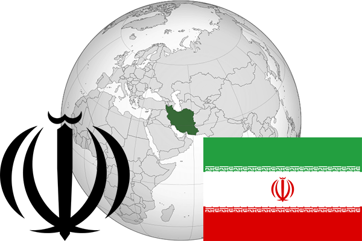

To`liq nomi: Eron Islom Respublikasi
Region: G`arbiy Osiyo
Qonunchilik shakli: Islom Respublikasi
Asos solingan: 1-aprel 1979-yil
Poytaxt: Tehron
Maydoni: 1 648 000 km² (dunyoda 17 -o`rinda )
Chegaradosh davlatlari: Iroq, Turkiya, Armaniston, Ozarbayjon, Turkmaniston, Afg`oniston, Turkiya
Aholisi: 78 408 412 (dunyoda 17 - o`rinda, 2015 -yil roʻyxat)
Aholi zichligi: 42 /km²
Aholining o`rtacha yoshi: 70,6 yil (72.1 ayollar, 69,1 erkaklar)
Rasmiy tili: Fors tili
Dini: Islom
Pul birligi: Eron riali
Telefon prefiksi: +98
Internet domen: .ir
Xalqaro tashkilotlarga a`zoligi: BMT (1945 – yildan), OPEC (Neftni eksport qiluvchi davlatlar tashkiloti) 1960-yildan
Dengiz va okeanlarga chiqishi: Kaspiy, Araviy, Persid qo`ltig`i dengizlari
YIM: Butun: $ 1,382 trln, Jon boshiga $ 17 800 (2015 - yil roʻyxati)
Yirik shaharlari: Tehron, Mashxad, Tabriz